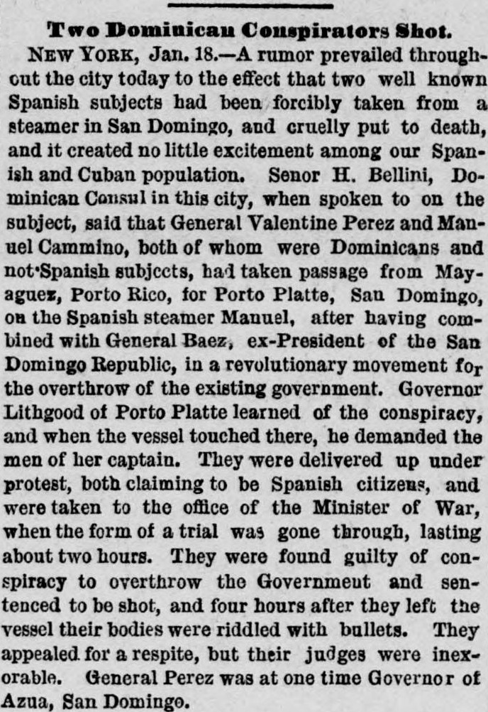

Subject, said that General Valentine Perez and Manuel Camino, bothEl asunto, dijo que el general Valentine Perez y Manuel Camino, ambos
The Portland Daily Press. Portland, Me., January 20, 1879. Page 2. View the originalVer el original

According to The Portland daily press on January 20, 1879, Dominicans General Valentine Perez and Manuel Camino conspired with ex-President General Baez in a revolutionary movement to overthrow the government of San Domingo. After taking passage on a Spanish steamer to Porto Platte, the men were demanded by Governor Lithgood, tried for conspiracy, found guilty, and executed by a firing squad four hours after leaving the vessel. Despite claiming Spanish citizenship and appealing for a respite, their judges remained inexorable.Según The Portland daily press del 20 de enero de 1879, los generales dominicanos Valentín Pérez y Manuel Camino conspiraron junto al expresidente general Báez en una intentona sediciosa para derrocar al gobierno de Santo Domingo. Tras embarcarse en un vapor español hacia Puerto Plata, fueron reclamados por el gobernador Lithgow, juzgados sumarísimamente por conspiración, declarados culpables y fusilados cuatro horas después de abandonar el buque. Pese a invocar carta de naturaleza española e implorar clemencia, sus jueces se mostraron inflexibles.
FULL TEXT:TEXTO COMPLETO:
Two Dominican Conspirators Shot.Dos conspiradores dominicanos fusilados.
NEW YORK, Jan. 18.--A rumor prevailed throughout the city today to the effect that two well known Spanish subjects had been forcibly taken from a steamer in San Domingo, and cruelly put to death, and it created no little excitement among our Spanish and Cuban population. Senor H. Bellini, Dominican Consul in this city, when spoken to on the subject, said that General Valentine Perez and Manuel Cammino, both of whom were Dominicans and not Spanish subjects, had taken passage from Mayaguez, Porto Rico, for Porto Platte, San Domingo, on the Spanish steamer Manuel, after having combined with General Baez, ex-President of the San Domingo Republic, in a revolutionary movement for the overthrow of the existing government. Governor Lithgood, of Porto Platte, learned of the conspiracy, and when the vessel touched there demanded the men of her captain. They were delivered up under protest, both claiming to be Spanish citizens, and were taken to the office of the Minister of War, when the form of trial was gone through, lasting about two hours. They were found guilty of conspiracy to overthrow the government and sentenced to be shot, and four hours after they left the vessel their bodies were riddled with bullets. They appealed for respite, but their judges were inexorable. General Perez was at one time Governor of Azua, San Domingo.NUEVA YORK, 18 de enero.—Un rumor prevaleció hoy en toda la ciudad al efecto de que dos súbditos españoles bien conocidos habían sido sacados por la fuerza de un vapor en Santo Domingo, y cruelmente ejecutados, y creó no poca excitación entre nuestra población española y cubana. El señor H. Bellini, Cónsul dominicano en esta ciudad, cuando se le habló sobre el asunto, dijo que el general Valentine Perez y Manuel Cammino, ambos dominicanos y no súbditos españoles, habían tomado pasaje desde Mayagüez, Puerto Rico, para Porto Platte, Santo Domingo, en el vapor español Manuel, después de haberse combinado con el general Báez, ex Presidente de la República de Santo Domingo, en un movimiento revolucionario para el derrocamiento del gobierno existente. El gobernador Lithgood, de Porto Platte, se enteró de la conspiración, y cuando el buque tocó allí demandó a los hombres de su capitán. Fueron entregados bajo protesta, ambos reclamando ser ciudadanos españoles, y fueron llevados a la oficina del Ministro de Guerra, donde se llevó a cabo la forma de juicio, que duró unas dos horas. Fueron declarados culpables de conspiración para derrocar el gobierno y sentenciados a ser fusilados, y cuatro horas después de dejar el buque sus cuerpos fueron acribillados a balazos. Apelaron por una prórroga, pero sus jueces fueron inexorables. El general Perez fue en un tiempo Gobernador de Azua, Santo Domingo.